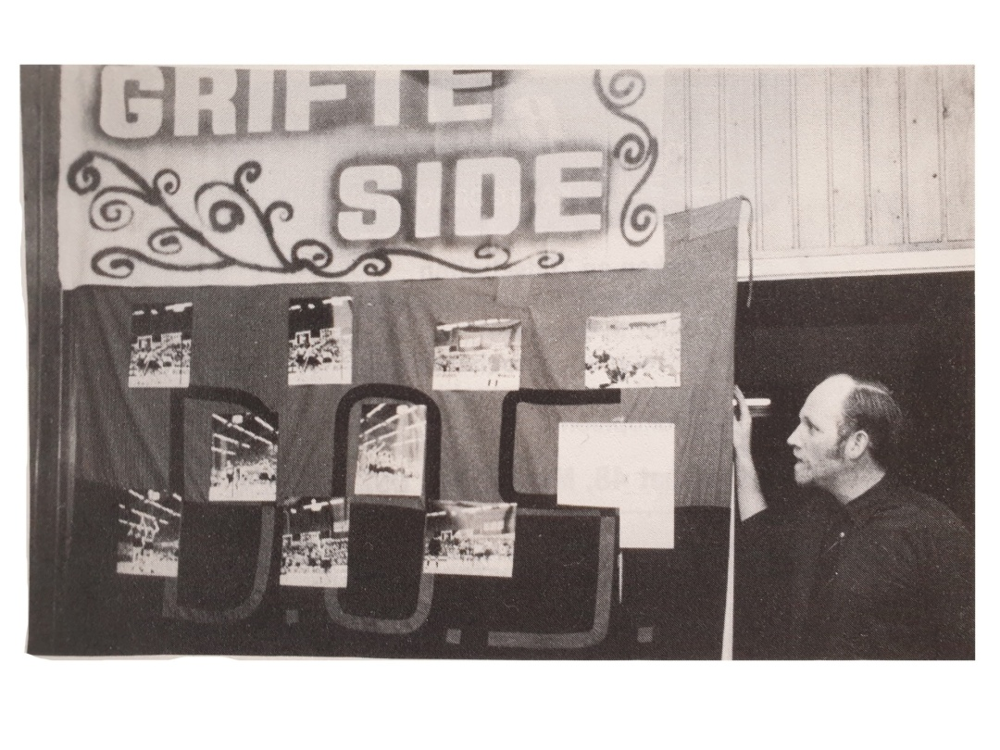

KLAAR VOOR DE START
Supporters langs de lijn, zo hoort het! Grifteside is er klaar voor. Kun je er niet live bij zijn? Jij hoeft geen
seconde te missen. Ook dit jaar komen we weer bij jou thuis in de huiskamer dankzij ons livestream
team. Zo kan iedereen meegenieten en de selectie naar de overwinning juichen.
Maar wist je dat wij nog veel verder kijken. Ons datateam zoomt in op alle details. Oh ja, wel één kanttekening: wanneer je de thuiswedstrijd via livestream volgt, mis je wel het heerlijke buffet in de sporthal.
Dus zeg nou zelf, live in de sporthal is toch veel beter .
De Grifteside is een groep van fanatieke supporters van
de korfbalvereniging DOS’46. Deze houdt zich voornamelijk bezig met de sfeer tijdens de wedstrijden, door
middel van liederen, vlaggen, getrommel, geklap en geschreeuw. Met regelmaat worden er sfeeracties georganiseerd. Dit zijn ludieke acties die voor of tijdens de
wedstrijd worden gehouden om de selectie een extra
steuntje in de rug te geven.
Daarnaast houdt de Grifteside zich bezig het aankleden
van de sporthal De Eendracht, voornamelijk door middel van spandoeken. Recentelijk is er een groot nieuw
spandoek bijgekomen met het logo van de Grifteside.

Foto van de kampioenswedstrijd van 1982, samen met de vlag van de Grifteside.
WIST JE DAT?
De Grifteside vroeger ook actief was op Youtube,
van 2009-2011 en van 2015-2017. In totaal zijn
er maar liefst 53 afl everingen geweest
onder de naam Grifteside TV.
WIST JE DAT?
De naam Grifteside komt van de breedste sloot van
Nijeveen, genaamde de Nijeveense Grift (Vaak de Grifte
genoemd). Aangezien de rechterkant van de sporthal het
dichts bij de Grifte ligt, was de naam makkelijk gemaakt
door de trouwe supporters van DOS’46.
WIST JE DAT?
De Grifteside oorsprokelijk is opgericht tijdens
de verhuizing van het Vledder in Meppel naar
de Eendracht in Nijeveen in 1980.